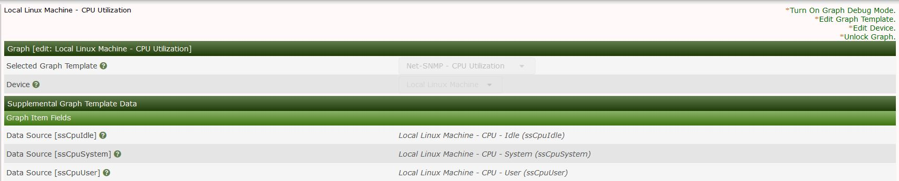
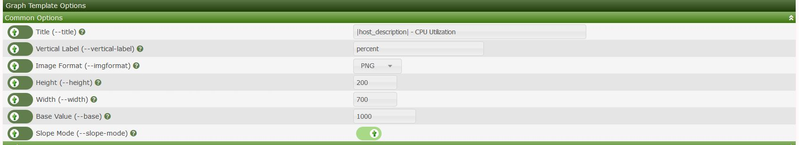

This section will describe Graph management in Cacti.
Cacti features a way to view the graphs per device via the console this allows the administrator to view the graphs that are attached to a specific device you can also search by type of graph shown below we search for graphs that are associated with the local linux server
Clicking on one of the graphs in the list shows the below menu from this menu you can enable debugging on the specific graph you can also change the template of the graph amongst other things

Cacti allows you to change many aspects of the graph template its self you can change parameters such the title of the graph as well the size of the graphs etc. These changes will be pushed to the graph template its self so others devices using the template will also be updated.

Copyright (c) 2004-2019 The Cacti Group